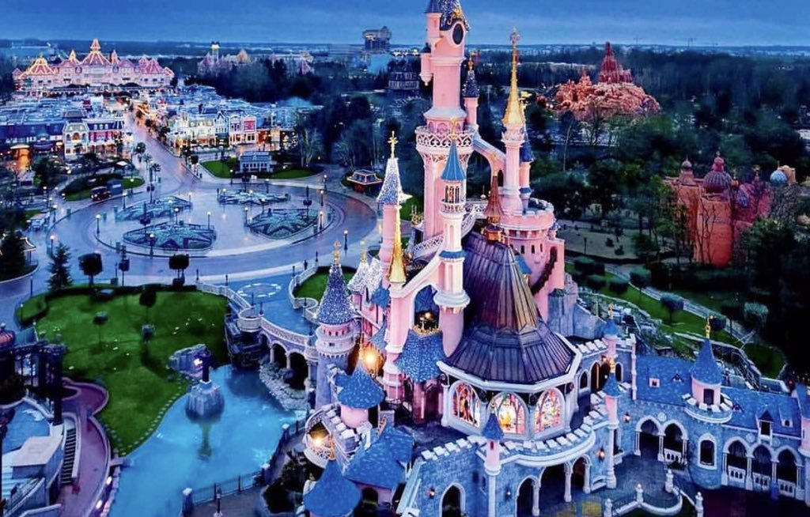

Les parcs sur le theme de Disney font partie des parcs les plus visités dans le monde. Il en existe 6 à travers le monde : 
Disneyland Resort comporte 2 parcs Disney, il se situe dans la ville d'Anaheim (pas loin de Los Angeles) dans l'état de la Californie.
C’est le tout premier parc Disney et le seul entièrement conçu et vu par Walt Disney lui-même. Le parc Disneyland a ouvert le 17 juillet 1955.
Il s'agit du second parc de Disney Resort ouvert le 8 février 2001.
Walt Disney World Resort est composé de 4 parcs Disney ainsi que d’autres structures tels que des parcs aquatiques, centre commercial, centre sportif etc. C’est le plus grand complexe de parcs Disney au monde, il est localisé en banlieue de la ville d’Orlando en Floride.
C’est le premier parc à avoir ouvert ses portes à Walt Disney World Resort. La date d’ouverture est le 1er octobre 1971. Le theme de ce parc est celui d’un royaume enchanté comme le Disneyland Resort en Californie.
Epcot est le second parc à avoir ouvert ses portes à Walt Disney World. L’idée de ce parc provient de Walt Disney lui-même. Epcot a ouvert ses portes le 1er octobre 1982.
Disney’s Hollywood Studios est le troisième parc à avoir vu le jour à Walt Disney World Resort en Floride. Le thème de ce parc est principalement celui du cinéma et de la télé. Il a ouvert ses portes le 1er mai 1989.
Ce parc a ouvert ses portes le 22 avril 1998. son theme est celui des animaux du monde actuel, du monde imaginaire ainsi que de la préhistoire.
Tokyo Disney Resort constitué de deux parcs à thème de Disney est situé à proximité de Tokyo, comme son nom l'indique.
Ce parc a ouvert le 15 avril 1983. Le concept de ce parc est celui d’un royaume enchanté comme celui de Magic Kingdom ou de Disneyland Californie.
Ce parc a ouvert le 4 septembre 2001.
Situé sur la commune de Chessy (Seine-et-Marne) à l’est de Paris. Disneyland Paris comprend deux parcs à thème ainsi que des hôtels et un terrain de golf. C’est le 4e royaume enchanté de Disney.
Ce parc a été ouvert en 1994. Le château, symbole du parc, est celui de La Belle au bois dormant comme pour Disneyland mais il a une architecture plus extravagante.
Ce parc est sur le thème des coulisses du cinéma et de l’animation.
Hong Kong Disneyland, ouvert le 12 septembre 2005, est le premier parc Disney en Chine. C’est le 5e royaume enchanté, il a ouvert à l'occasion du cinquantième anniversaire de Disneyland en Californie et c’est pour cela qu’il lui ressemble.
Shanghai Disney Resort a ouvert en juin 2016. Il est situé à Chansha, dans le district de Pudong, proche de Shanghai. Il est environ 4 fois plus grand que celui de Hong Kong.
L'ensemble de ces parcs à thème ont rapporté un chiffre d'affaires supérieur à 26 milliards de dollars en 2019.
Le site officiel de Disney Retour